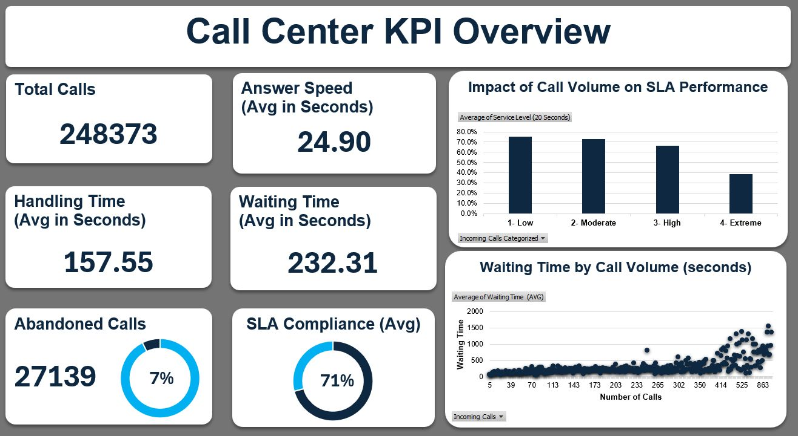

Flagship
Operations · Excel
Center of Excellence Reporting Suite
Multi-tab Excel suite — the account's single source of truth for audit, coaching, quality, and compliance — used weekly by QA and operations leaders.